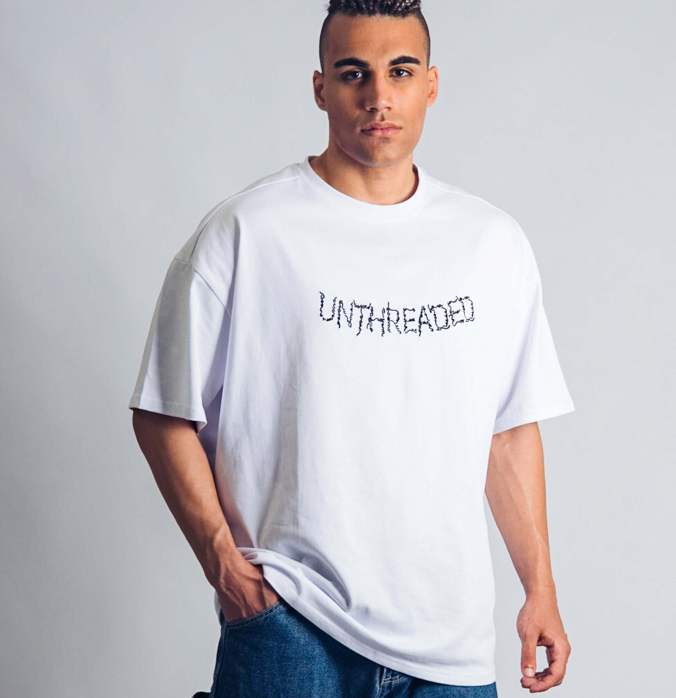
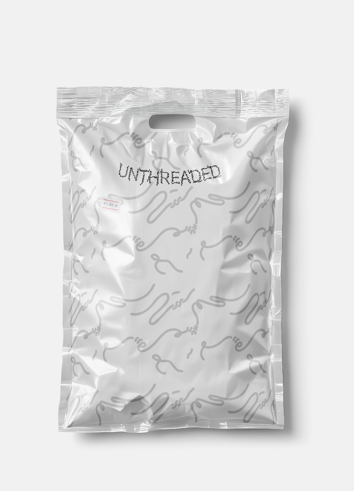
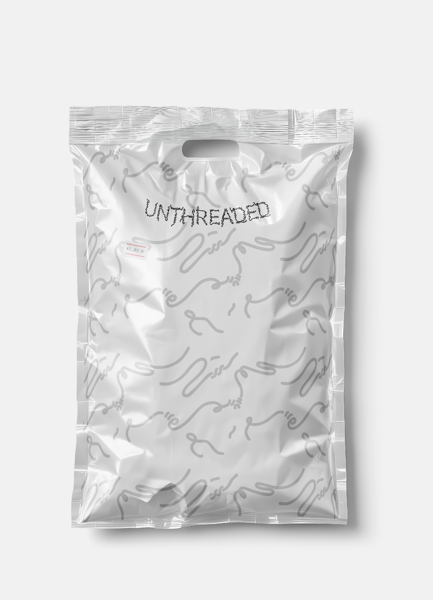
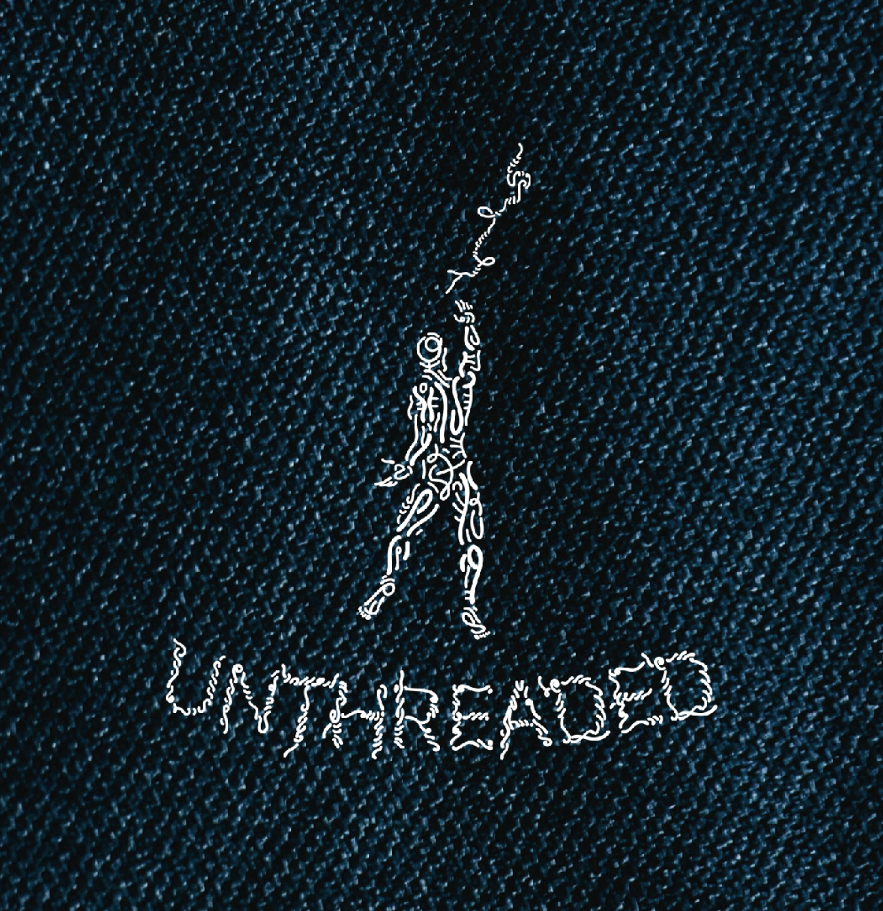
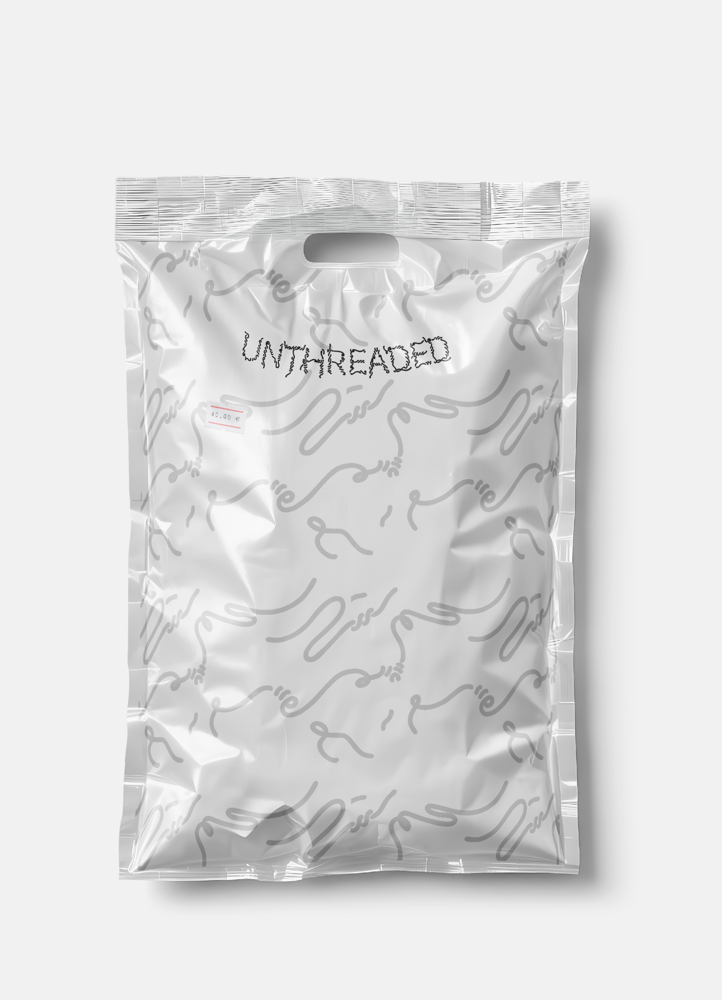

Unthreaded embodies a defiant philosophy through urban apparel
Unthreaded
The Challenge
Unthreaded, a Greek urban wear clothing brand, needed to launch into the competitive streetwear scene with a clear point of view. The brand rejects fast fashion and hype culture, so the identity had to communicate authenticity, longevity, as well as an essence of freedom and determination that would resonate with a discerning audience.
The Solution
My role was to give a visual voice to Unthreaded’s powerful story of breaking free. I was tasked with creating a comprehensive identity that felt both intentional and disruptive. From the concept and logo to the apparel graphics, I designed a system that celebrates the art of letting go.


 



